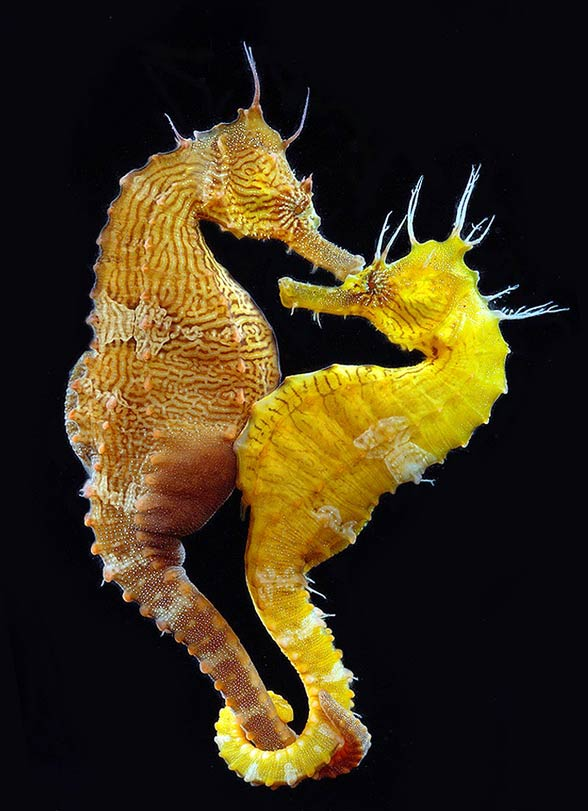

DOWIEDZ SIĘ WIĘCEJ!
Tata w ciąży?
- Para koników pływa bardzo blisko siebie, z splątanymi ogonami, ryjkiem przy ryjku
- Nastęouję zbliżenie organu produkującego jajeczka samicy do otworu torby lęgowej samca
- Samica składa tam setki jajeczek, które zsotają zapłodnione przez partera
- Następnie torba się zasklepia i jajeczka dojrzewają
- Po 14-28 dniach ciąży samiec dostaję skurczy dzięki czemu wydaje na świat potomstwo, do 1500 osobników, z których przeżywa niewiele
Niektóre samce potrafią rano urodzić, a wieczorem być w kolejnej ciąży.

KLIKNIJ TUTAJ, ABY WRÓCIĆ DO STRONY GŁÓWNEJ >>